We applied K-Means clustering to the Palmer Penguins dataset to uncover natural groupings based on two physical features: bill length and bill depth. After cleaning the data to exclude missing values, we implemented the K-Means algorithm from scratch, initializing centroids, assigning clusters using Euclidean distance, and updating centroids iteratively. A series of plots illustrated how the algorithm refined cluster assignments over several iterations. This hands-on implementation helped visualize how K-Means converges toward stable groupings in low-dimensional space.
To determine the optimal number of clusters, we used the elbow method (via within-cluster sum of squares) and silhouette scores. Both metrics suggested that 2 or 3 clusters best captured the data structure. Visualizations of the final clustering for k=2. k=2 showed well-separated groups that align closely with known species differences, reinforcing the effectiveness of K-Means even in a simple two-feature scenario.
print(peng.shape)peng.head()display(peng.groupby(['sex','species'])['bill_length_mm'].mean().reset_index())display(peng.groupby(['sex','species'])['flipper_length_mm'].mean().reset_index())# Drop rows with missing values in relevant columnspeng_clean = peng.dropna(subset=['bill_length_mm', 'bill_depth_mm', 'sex'])
(333, 8)
sex
species
bill_length_mm
0
female
Adelie
37.257534
1
female
Chinstrap
46.573529
2
female
Gentoo
45.563793
3
male
Adelie
40.390411
4
male
Chinstrap
51.094118
5
male
Gentoo
49.473770
sex
species
flipper_length_mm
0
female
Adelie
187.794521
1
female
Chinstrap
191.735294
2
female
Gentoo
212.706897
3
male
Adelie
192.410959
4
male
Chinstrap
199.911765
5
male
Gentoo
221.540984
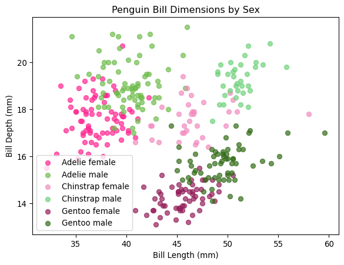
def initialize_centroids(X, k): indices = np.random.choice(X.shape[0], k, replace=False)#return k rows from a dataframe of shape X.shape[0]return X.iloc[indices]initial_centroids = initialize_centroids(peng[['bill_length_mm','bill_depth_mm']],6)for (species, sex), group in peng_clean.groupby(['species', 'sex']): plt.scatter(group['bill_length_mm'], group['bill_depth_mm'], color=colors.get((species, sex), 'gray'), label=f'{species}{sex}', alpha=0.7)plt.scatter(initial_centroids[initial_centroids.columns[0]], # x = bill_length_mm initial_centroids[initial_centroids.columns[1]], # y = bill_depth_mm color='black', marker='x', s=100, label='Initial Centroids')plt.legend()plt.show()
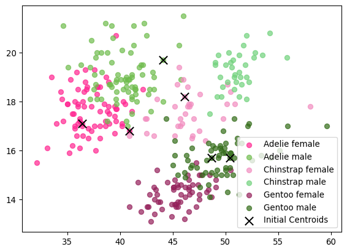
def assign_clusters(X, centroids): distances = np.linalg.norm(X[:, np.newaxis] - centroids, axis=2)return np.argmin(distances, axis=1)X = peng_clean[['bill_length_mm', 'bill_depth_mm']].to_numpy()centroids = initial_centroids.to_numpy()labels = assign_clusters(X, centroids)def plot_clusters(X, centroids, labels): plt.figure(figsize=(10, 6))for i inrange(centroids.shape[0]): plt.scatter(X[labels == i, 0], X[labels == i, 1], label=f'Cluster {i+1}', alpha=0.7) plt.scatter(centroids[:, 0], centroids[:, 1], color='black', marker='x', s=100, label='Centroids') plt.xlabel('Bill Length (mm)') plt.ylabel('Bill Depth (mm)') plt.title('K-Means Clustering of Penguin Bill Dimensions') plt.legend() plt.show()plot_clusters(X, centroids, labels)def update_centroids(X, labels, k):return np.array([X[labels == i].mean(axis=0) for i inrange(k)])max_iters =3for i inrange(max_iters): labels = assign_clusters(X, centroids) new_centroids = update_centroids(X, labels, 6)# Optional: visualize current step plot_clusters(X, new_centroids,labels,)if np.allclose(centroids, new_centroids):print(f"Converged at iteration {i}")break centroids = new_centroids
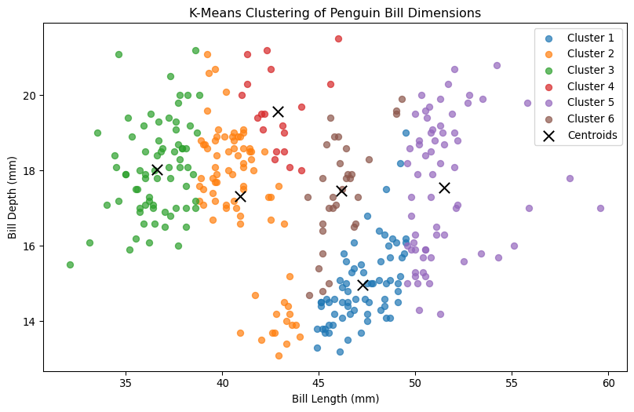
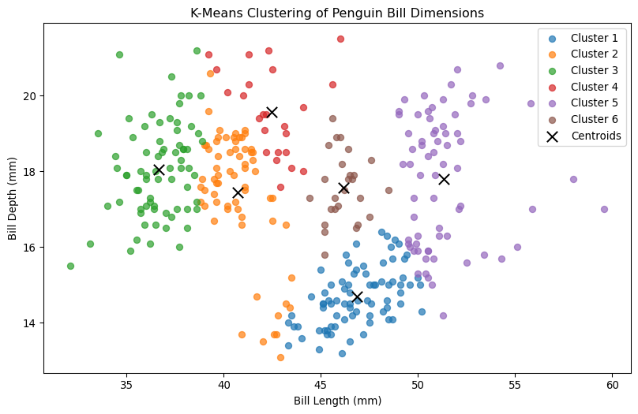
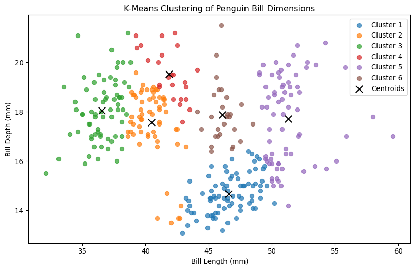
from sklearn.cluster import KMeansfrom sklearn.metrics import silhouette_score, silhouette_samples# Define k valuesk_values =range(2, 8)silhouette_scores = []wcss_scores = []kmeans_models = []# Loop over cluster valuesfor k in k_values: kmeans = KMeans(n_clusters=k, init='k-means++', n_init=10, random_state=42) kmeans.fit(X) labels = kmeans.labels_ silhouette_scores.append(silhouette_score(X, labels)) wcss_scores.append(kmeans.inertia_) kmeans_models.append((kmeans, labels))# Plot elbow and silhouette scoresfig, ax = plt.subplots(1, 2, figsize=(12, 5))# WCSS (Elbow Method)ax[0].plot(k_values, wcss_scores, marker='o')ax[0].set_title("WCSS vs. Number of Clusters")ax[0].set_xlabel("k")ax[0].set_ylabel("WCSS (Inertia)")# Highlight k = 2 to 3highlight = (np.array(k_values) >=2) & (np.array(k_values) <=3)ax[0].plot(np.array(k_values)[highlight], np.array(wcss_scores)[highlight], 'ro', label='Highlighted Range')ax[0].plot(np.array(k_values)[highlight], np.array(wcss_scores)[highlight], color='red', linewidth=2)# Silhouette Scoresax[1].plot(k_values, silhouette_scores, marker='o')ax[1].plot(np.array(k_values)[highlight], np.array(silhouette_scores)[highlight], 'ro', label='Highlighted Range')ax[1].plot(np.array(k_values)[highlight], np.array(silhouette_scores)[highlight], color='red', linewidth=2)ax[1].set_title("Silhouette Score vs. Number of Clusters")ax[1].set_xlabel("k")ax[1].set_ylabel("Silhouette Score")plt.tight_layout()plt.show()
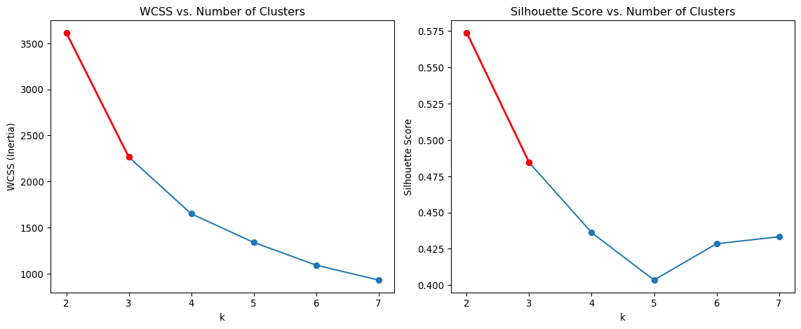
from sklearn.cluster import KMeansfrom sklearn.metrics import silhouette_samples, silhouette_scoreimport matplotlib.pyplot as pltimport numpy as npk_values =range(2, 5)for k in k_values:# Fit KMeans kmeans = KMeans(n_clusters=k, init='k-means++', n_init=10, random_state=42) labels = kmeans.fit_predict(X) silhouette_vals = silhouette_samples(X, labels) avg_score = silhouette_score(X, labels)# Set up plot fig, ax = plt.subplots(figsize=(10, 6)) y_lower =10for i inrange(k): ith_cluster_sil_vals = silhouette_vals[labels == i] ith_cluster_sil_vals.sort() size_cluster_i = ith_cluster_sil_vals.shape[0] y_upper = y_lower + size_cluster_i color = plt.cm.tab10(i) ax.fill_betweenx(np.arange(y_lower, y_upper),0, ith_cluster_sil_vals, facecolor=color, edgecolor=color, alpha=0.7) ax.text(-0.05, y_lower +0.5* size_cluster_i, str(i)) y_lower = y_upper +10# spacing between clusters ax.axvline(avg_score, color="black", linestyle="--", label=f"Avg = {avg_score:.2f}") ax.set_title(f"Silhouette Plot for k = {k}") ax.set_xlabel("Silhouette Coefficient") ax.set_ylabel("Cluster") ax.legend() plt.tight_layout() plt.show()best_k =2kmeans = KMeans(n_clusters=best_k, init='k-means++', n_init=5, random_state=42)kmeans.fit(X)# Get cluster labels and centroidslabels = kmeans.labels_centroids = kmeans.cluster_centers_# Plotplt.figure(figsize=(10, 6))plt.scatter(X[:, 0], X[:, 1], c=labels, cmap='tab10', alpha=0.9, label='Data Points')plt.scatter(centroids[:, 0], centroids[:, 1], color='black', marker='x', s=100, label='Centroids')plt.xlabel('Bill Length (mm)')plt.ylabel('Bill Depth (mm)')plt.title(f"KMeans Clustering Result (k = {best_k})")plt.legend()plt.show()
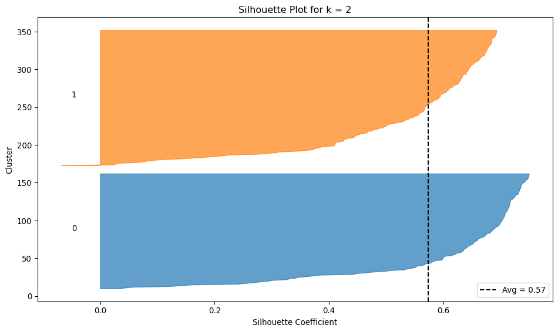
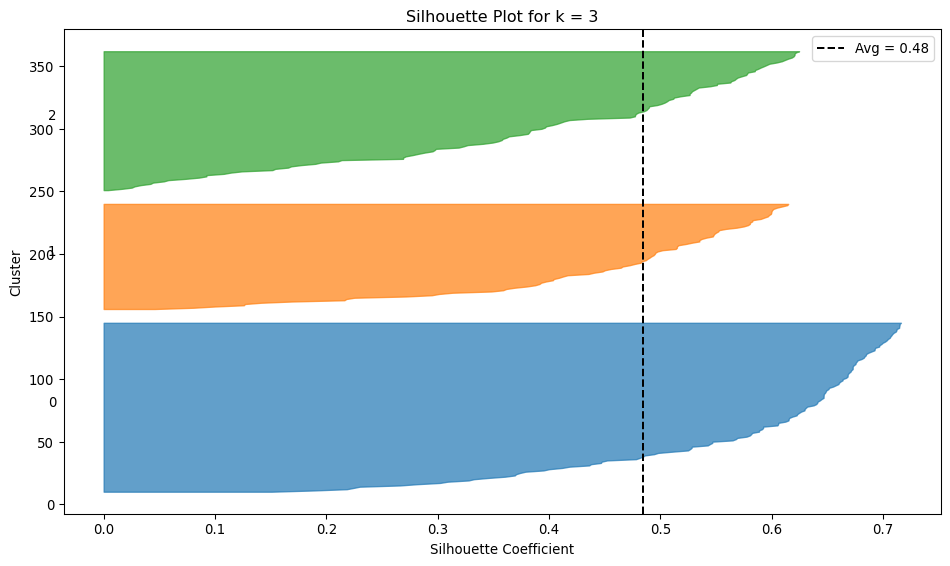
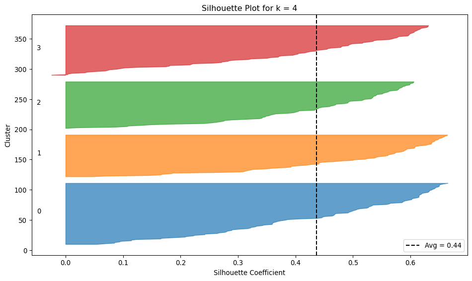
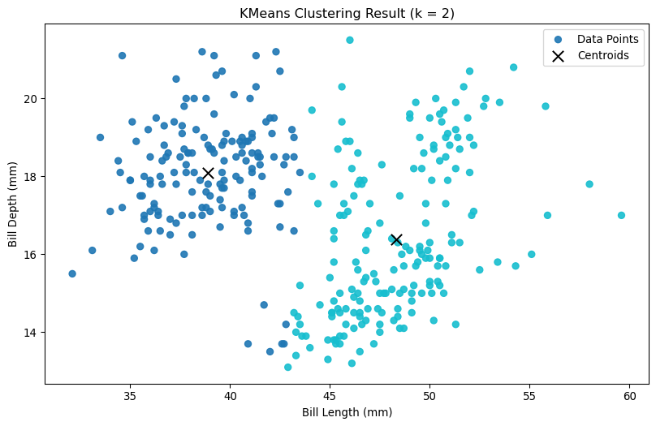
2b. Key Drivers Analysis
This section performs a comprehensive Key Drivers Analysis to identify which variables are most influential in predicting the impact outcome using multiple statistical and machine learning-based importance metrics. The analysis begins by visualizing correlations between each predictor and the target using a heatmap and calculating Pearson correlation coefficients. From there, it systematically builds a suite of feature importance measures: standardized coefficients from a linear regression model, “usefulness” (the change in R² when each feature is removed), SHAP values for linear models, Johnson’s Relative Weights (an algebraic approximation to Shapley values), and feature importance from a Random Forest model. Each method captures a different perspective on importance—whether based on marginal associations, incremental model contribution, or predictive power in linear and nonlinear settings.
The results are presented visually using bar charts for the top 10 features from each method, allowing for easy comparison. The final importance_df table consolidates all six metrics into a single view, providing a multi-faceted assessment of variable importance.
import seaborn as sns# Define the target column againtarget_col ="impact"if"impact"in drivers.columns else drivers.columns[-1]# Keep X clean for modelingX = drivers.drop(columns=[target_col])y = drivers[target_col]# ✅ Only for visualizationX_corr = X.copy()X_corr[target_col] = y# Use X_corr for heatmap, but NOT for modelingcorr_matrix = X_corr.corr()# Plot heatmapplt.figure(figsize=(10, 8))sns.heatmap(corr_matrix, annot=True, cmap='coolwarm', fmt=".2f", square=True)plt.title("Correlation Heatmap with Target Variable")plt.tight_layout()plt.show()
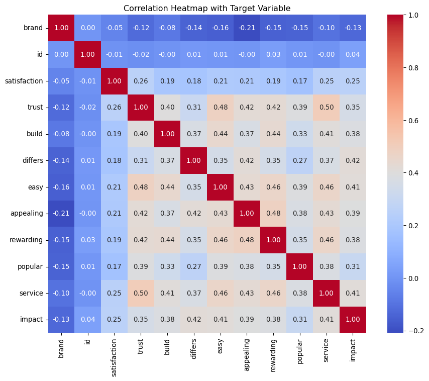
pearson_corr = X.corrwith(y).abs() # Absolute for magnitudepearson_corr = pearson_corr.sort_values(ascending=False)# Display top 10 features by absolute Pearson correlationtop_10_features = pearson_corr.head(10)print("Top 10 Features by Absolute Pearson Correlation with Target:")print(top_10_features)# Plot top 10 featuresplt.figure(figsize=(10, 6))top_10_features.plot(kind='bar', color='skyblue')plt.title("Top 10 Features by Absolute Pearson Correlation with Target")plt.xlabel("Features")plt.ylabel("Absolute Pearson Correlation")plt.xticks(rotation=45)plt.tight_layout()
Top 10 Features by Absolute Pearson Correlation with Target:
differs 0.416957
service 0.412313
easy 0.412092
appealing 0.394282
rewarding 0.384245
build 0.383639
trust 0.354062
popular 0.305265
satisfaction 0.254539
brand 0.130475
dtype: float64
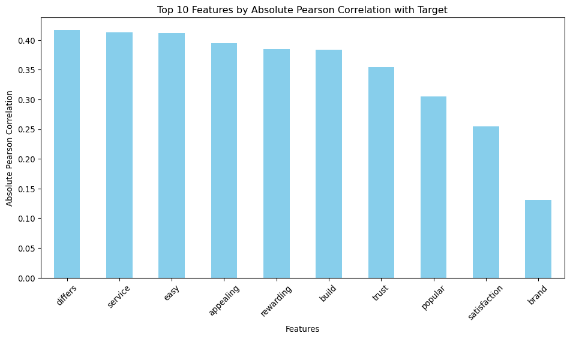
from sklearn.linear_model import LinearRegressionfrom sklearn.preprocessing import StandardScalerscaler = StandardScaler()X_scaled = scaler.fit_transform(X)y_scaled = (y - y.mean()) / y.std()lr = LinearRegression().fit(X_scaled, y_scaled)standardized_coeffs = pd.Series(abs(lr.coef_), index=X.columns)standardized_coeffs = standardized_coeffs.sort_values(ascending=False)# Display top 10 features by standardized coefficientstop_10_standardized = standardized_coeffs.head(10)print("Top 10 Features by Standardized Coefficients:")print(top_10_standardized)# Plot top 10 features by standardized coefficientsplt.figure(figsize=(10, 6))top_10_standardized.plot(kind='bar', color='lightgreen')plt.title("Top 10 Features by Standardized Coefficients")plt.xlabel("Features")plt.ylabel("Standardized Coefficient Magnitude")plt.xticks(rotation=45)plt.tight_layout()
Top 10 Features by Standardized Coefficients:
differs 0.190644
easy 0.122058
service 0.120057
build 0.102122
satisfaction 0.097164
appealing 0.088149
rewarding 0.071559
popular 0.039338
id 0.035668
trust 0.026109
dtype: float64
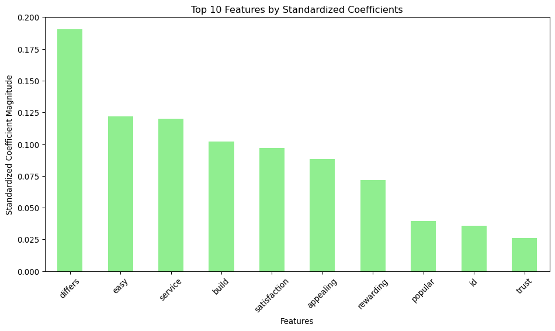
from sklearn.metrics import r2_scorebase_r2 = r2_score(y, lr.predict(X_scaled))usefulness = {}for col in X.columns: cols_minus_one = X.drop(columns=[col]) X_scaled_minus = scaler.fit_transform(cols_minus_one) model = LinearRegression().fit(X_scaled_minus, y) pred = model.predict(X_scaled_minus) usefulness[col] = base_r2 - r2_score(y, pred)usefulness = pd.Series(usefulness)# Sort usefulness scoresusefulness = usefulness.sort_values(ascending=False)# Display top 10 features by usefulnesstop_10_usefulness = usefulness.head(10)print("Top 10 Features by Usefulness:")print(top_10_usefulness)# Plot top 10 features by usefulnessplt.figure(figsize=(10, 6))top_10_usefulness.plot(kind='bar', color='salmon')plt.title("Top 10 Features by Usefulness")plt.xlabel("Features")plt.ylabel("Usefulness (R² Decrease)")plt.xticks(rotation=45)plt.tight_layout()
Top 10 Features by Usefulness:
differs -0.886409
easy -0.904163
service -0.904489
satisfaction -0.904652
build -0.906164
appealing -0.908385
rewarding -0.910023
id -0.911902
popular -0.912029
trust -0.912756
dtype: float64
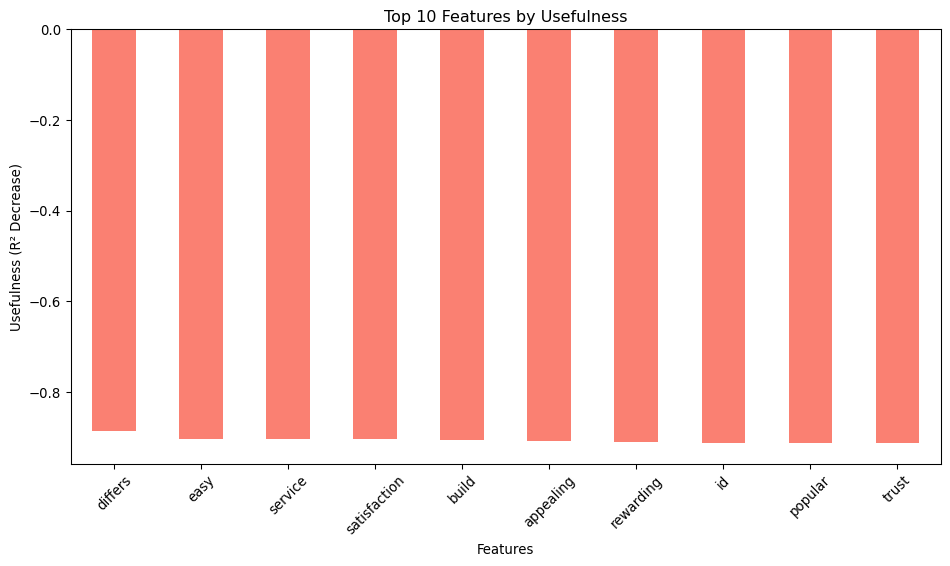
import shapexplainer = shap.Explainer(lr, X_scaled)shap_values = explainer(X_scaled)shap_vals_mean = pd.Series(abs(shap_values.values).mean(axis=0), index=X.columns)# Combine all metrics into a DataFrameimportance_df = pd.DataFrame({'Pearson Correlation': pearson_corr,'Standardized Coefficients': standardized_coeffs,'Usefulness': usefulness,'SHAP Values Mean': shap_vals_mean})importance_df = importance_df.sort_values(by='SHAP Values Mean', ascending=False)# Display top 10 features by SHAP values meantop_10_shap = importance_df.head(10)print("Top 10 Features by SHAP Values Mean:")print(top_10_shap)# Plot top 10 features by SHAP values meanplt.figure(figsize=(10, 6))top_10_shap['SHAP Values Mean'].plot(kind='bar', color='purple')plt.title("Top 10 Features by SHAP Values Mean")plt.xlabel("Features")plt.ylabel("Mean SHAP Value Magnitude")plt.xticks(rotation=45)plt.tight_layout()
Top 10 Features by SHAP Values Mean:
Pearson Correlation Standardized Coefficients Usefulness \
differs 0.416957 0.190644 -0.886409
easy 0.412092 0.122058 -0.904163
service 0.412313 0.120057 -0.904489
build 0.383639 0.102122 -0.906164
appealing 0.394282 0.088149 -0.908385
satisfaction 0.254539 0.097164 -0.904652
rewarding 0.384245 0.071559 -0.910023
popular 0.305265 0.039338 -0.912029
id 0.038579 0.035668 -0.911902
trust 0.354062 0.026109 -0.912756
SHAP Values Mean
differs 0.168597
easy 0.122911
service 0.118269
build 0.101014
appealing 0.086843
satisfaction 0.081456
rewarding 0.070639
popular 0.039327
id 0.030698
trust 0.026290
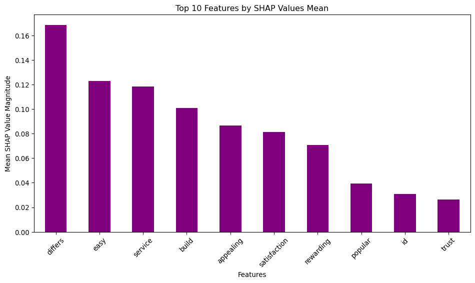
import numpy as npcorr_matrix = np.corrcoef(np.column_stack([X_scaled, y_scaled]), rowvar=False)rxy = corr_matrix[:-1, -1]rxx = corr_matrix[:-1, :-1]eig_vals, eig_vecs = np.linalg.eigh(rxx)lambda_diag = np.diag(np.sqrt(eig_vals))Z = eig_vecs @ lambda_diagbeta = np.linalg.inv(Z.T @ Z) @ Z.T @ rxyrel_weights = np.square(Z @ beta)rel_weights = pd.Series(rel_weights / rel_weights.sum(), index=X.columns)# Combine all metrics into a DataFramemetrics_df = pd.DataFrame({'Pearson Correlation': pearson_corr,'Standardized Coefficients': standardized_coeffs,'Usefulness': usefulness,'SHAP Values Mean': shap_vals_mean,'Relative Weights': rel_weights})# Display top 10 features by relative weightstop_10_weights = metrics_df['Relative Weights'].sort_values(ascending=False).head(10)print("Top 10 Features by Relative Weights:")print(top_10_weights)# Plot top 10 features by relative weightsplt.figure(figsize=(10, 6))top_10_weights.plot(kind='bar', color='orange')plt.title("Top 10 Features by Relative Weights")plt.xlabel("Features")plt.ylabel("Relative Weight")plt.xticks(rotation=45)plt.tight_layout()
Top 10 Features by Relative Weights:
differs 0.137346
service 0.134303
easy 0.134160
appealing 0.122814
rewarding 0.116641
build 0.116273
trust 0.099036
popular 0.073619
satisfaction 0.051185
brand 0.013449
Name: Relative Weights, dtype: float64
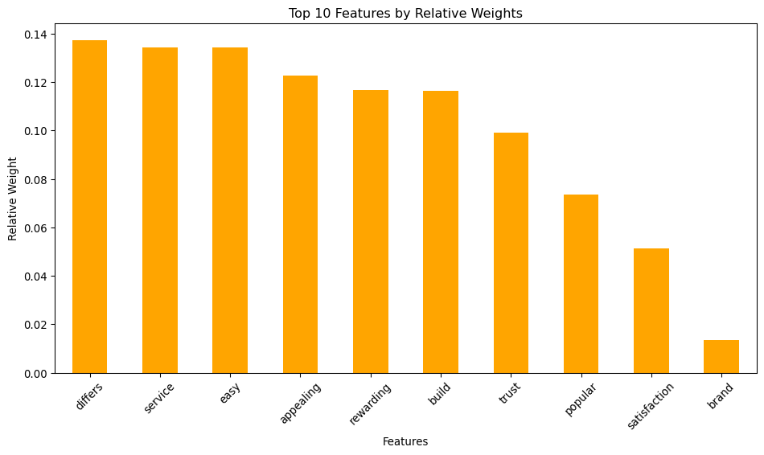
from sklearn.ensemble import RandomForestRegressorrf = RandomForestRegressor(n_estimators=1000, random_state=42)rf.fit(X, y)rf_importance = pd.Series(rf.feature_importances_, index=X.columns)import matplotlib.pyplot as pltimportance_df = pd.DataFrame({'Pearson Correlation': pearson_corr,'Standardized Coefficients': standardized_coeffs,'Usefulness': usefulness,'SHAP Mean Absolute Values': shap_vals_mean,'Relative Weights': rel_weights,'Random Forest Importance': rf_importance})importance_df = importance_df.sort_values(by='Random Forest Importance', ascending=False)# Display top 10 features by Random Forest importancetop_10_rf = importance_df['Random Forest Importance'].head(10)print("Top 10 Features by Random Forest Importance:")print(top_10_rf)# Plot top 10 features by Random Forest importanceplt.figure(figsize=(10, 6))top_10_rf.plot(kind='bar', color='teal')plt.title("Top 10 Features by Random Forest Importance")plt.xlabel("Features")plt.ylabel("Random Forest Importance")plt.xticks(rotation=45)plt.tight_layout()# Combine all metrics into a single DataFrame for comparison
Top 10 Features by Random Forest Importance:
id 0.353325
differs 0.119876
brand 0.103941
easy 0.083735
service 0.082971
satisfaction 0.075222
appealing 0.045293
rewarding 0.040043
build 0.034880
popular 0.030899
Name: Random Forest Importance, dtype: float64